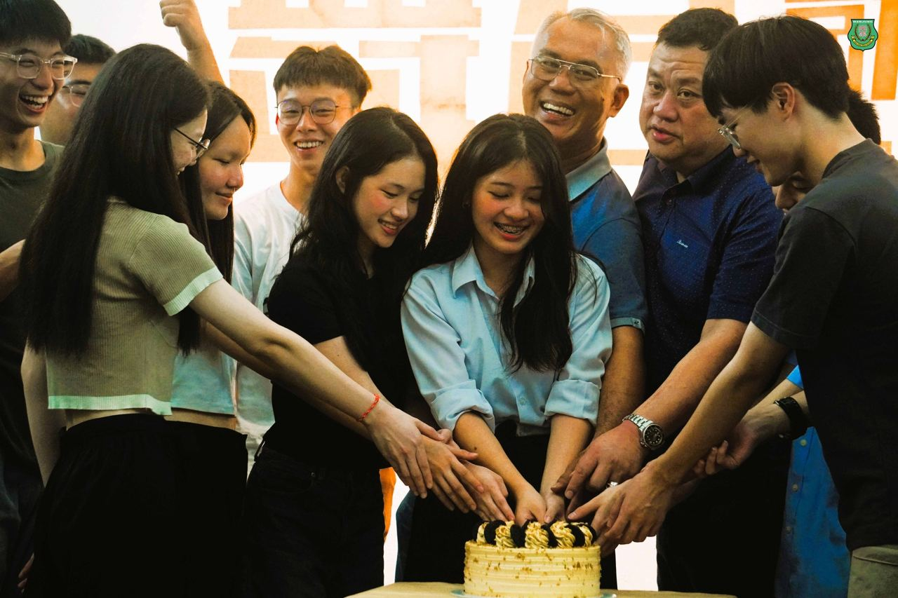
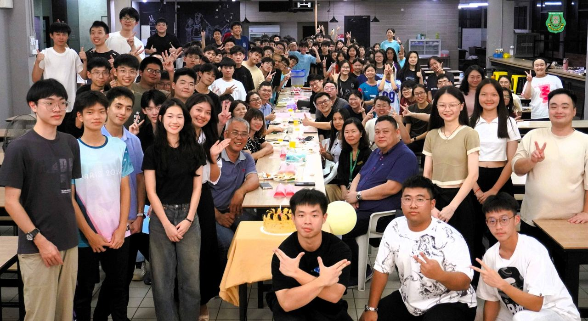
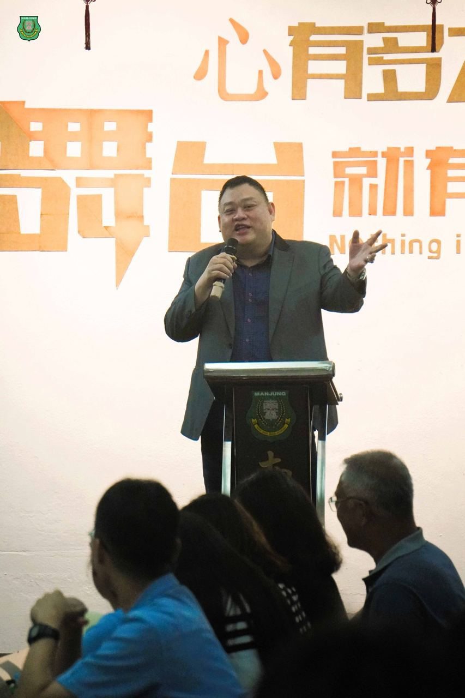
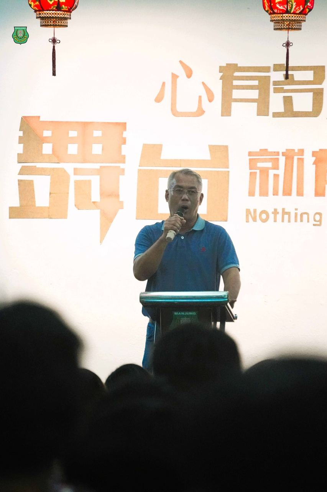
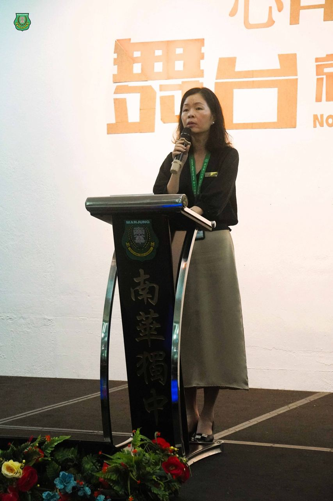
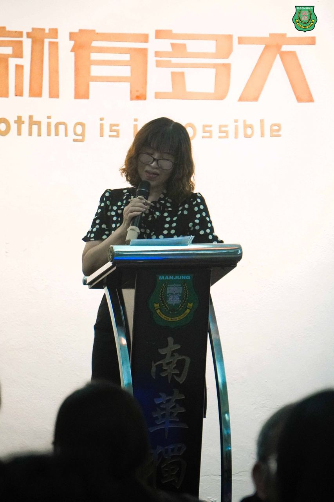
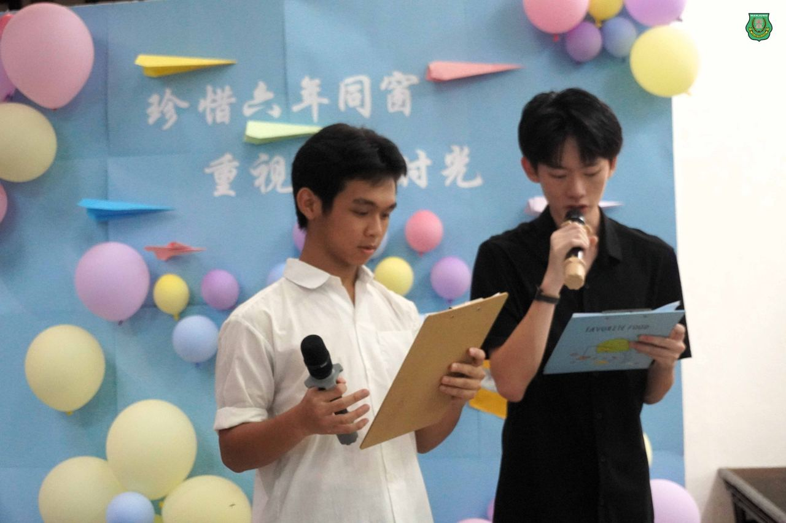
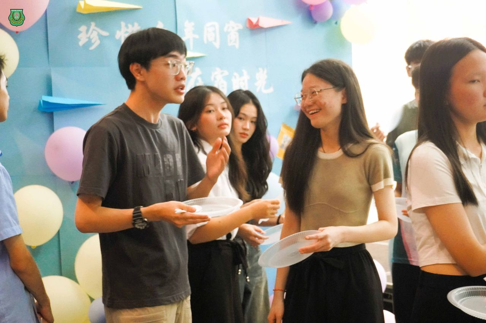

南华独中宿舍高三欢送会
南华独中宿舍高三欢送会
百人合唱献学长姐祝福
宿舍自治委员会交接仪式象征传承
“朋友一生一起走，那些日子不再有……” 当熟悉的旋律在本校多用途学生餐厅响起，全场百余名寄宿生层层围住为即将离巢的12位高三学长姐，以歌声献上最后的祝福。此刻歌声超越了语言，谱写成一篇关于青春的乐曲。
本校宿舍自治委员会日前举办 “2025年 #宿舍高三生欢送会 暨 #自治委员会交接与就职仪式”，这场由宿舍生自治主导的晚宴，不仅是职权的交接，更关乎成长、离别与传承的仪式。欢送会的离别之情在全体宿舍生大合唱环节达到顶点，凭借《朋友》与《几分之几》这两首歌曲，唱出了六年来在同一个屋檐下，同甘共苦结下的深厚情谊。
作为宿舍的“大家长”，南华独中宿舍小组主席 #高级拿督叶绍利 在致辞时，为即将踏入社会的毕业生送上了三句金玉良言。“第一，保持正直与善良，这是你们一生最重要的底气；第二，勇敢面对变化，未来的路不平坦，但由于你们在宿舍练就了韧性，我相信你们能应付；第三，不要忘记回家的路。”高级拿督叶绍利强调，宿舍不仅是学生居住的地方，更是见证他们从稚嫩走向成熟的磨练场。他勉励毕业生，无论飞得多远，母校与宿舍永远是他们的避风港，随时欢迎他们“回家”。
#董事总务何添胜 则从社会现实的角度，为即将踏入社会的毕业生提供了务实的建议。他指出，宿舍其实就是一个“微型社会”，这里没有父母全天候的保护伞，每个人都要为自己的行为负责。他提醒学生，现实世界充满了竞争，在宿舍学到的分寸感与适应能力，将是未来生存的重要技能。
#校长陈丽冰博士 在致辞时，对长期离家在外的孩子表达了深深的敬意。她强调，寄宿生活是学校教育中极为关键的一环，它迫使学生提早面对人际关系的磨合与自我管理的挑战。 “能在集体生活中坚持六年，懂得在冲突中寻找平衡，在孤独时自我调适，你们所练就的独立与坚韧，是远比书本知识更宝贵的财富。” 陈校长勉励毕业生，带着这份在南华宿舍淬炼出的底气，勇敢走向更广阔的世界。
#家长联谊会主席叶燕妮女士 则从父母的视角，道出了送子寄宿的心路历程。她感性地表示，将未成年的孩子送入宿舍，是每一位父母最艰难的“放手”，但这背后承载的是对南华教育最深沉的信任与寄托。叶主席表示，成绩单上的分数固然重要，但孩子在宿舍生活中练就的生存能力与独立人格，才是让家长感到最欣慰的“成长答卷”。
12位宿舍高三毕业生轮流上台展露这六年的寄宿心声，分享着与同寝同宿的伙伴生活点滴，从初入宿时的懵懂想家，到后来因为抢浴室、聊心事而建立起的革命情感，一个个真实鲜活的故事，拼凑出了南华宿舍独有的生活图景。#前任舍长傅韵宁 在致辞中感慨：“宿舍见证了我们最真实、最毫无保留的青春模样。”
当晚也见证了宿舍自治精神的传承。在宿舍小组主席高级拿督叶绍利及全体董家教师生见证下，新届宿舍自治委员会在 #舍长邱辉煌 正式接过重任，担起宿舍自治的精神支柱。#筹委会主席杜静雯 特别感谢两位顾问老师严厉的指导，正是这种高标准的要求，让学生在筹办活动中真正学会了担当。
这一夜，南华礼堂流淌的不仅是惜别的泪水，更多的是对共同记忆的珍视。正如歌曲《几分之几》所传达的意涵——在最好的年华相遇，每个人都成为了彼此生命中不可或缺的一部分，带着这份共同的记忆，各自奔赴下一段旅程。







